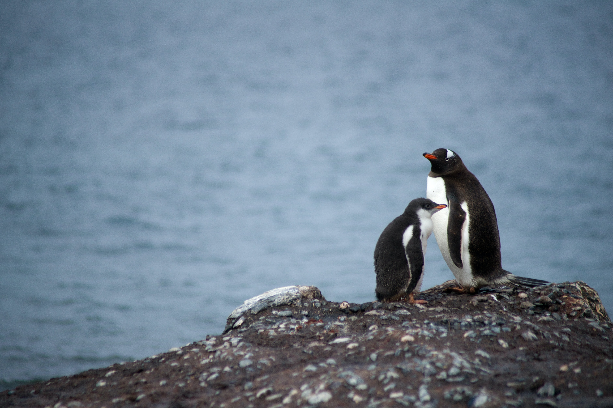
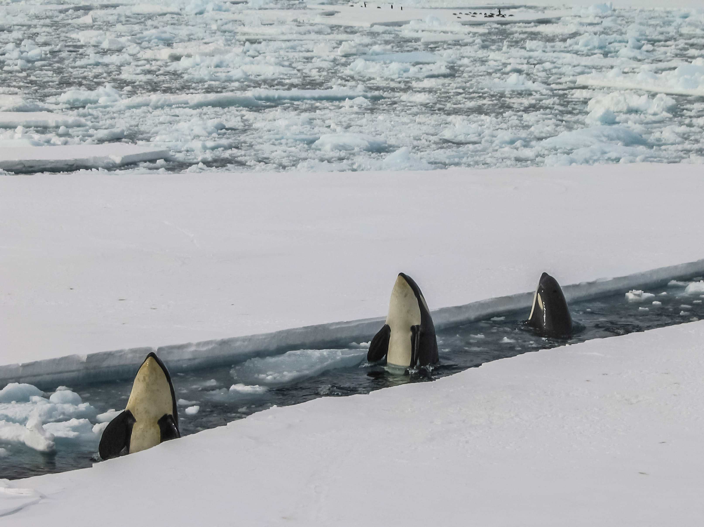

Youtube
#Youtube
#HTML
#CSS
이 사이트는 HTML과 CSS 를 이용한 Youtube Clone coding 입니다.
HTML + CSS web portpolio
1000 views 1 weeks ago
1.2K
10
Share
Save
Report
Coding by SJ Lee
구독자 1.2K 명
subscribe
Up next
남극을 찾아오는 배 과연 정체는 무엇인가?
Happy Coding by SJ Lee
78 views

남극 펭귄가족의 생활
Happy Coding by SJ Lee
250 views

고래를 찾아서 여기는 남극입니다.
Happy Coding by SJ Lee
150 views